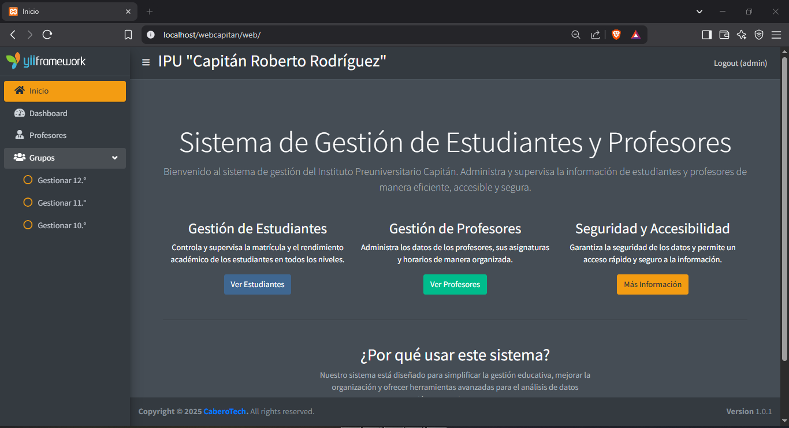
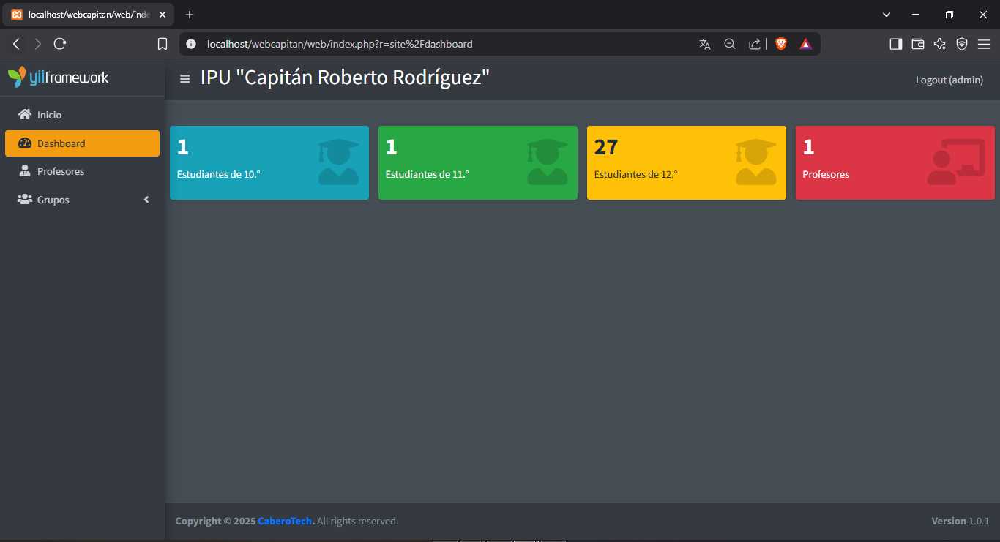
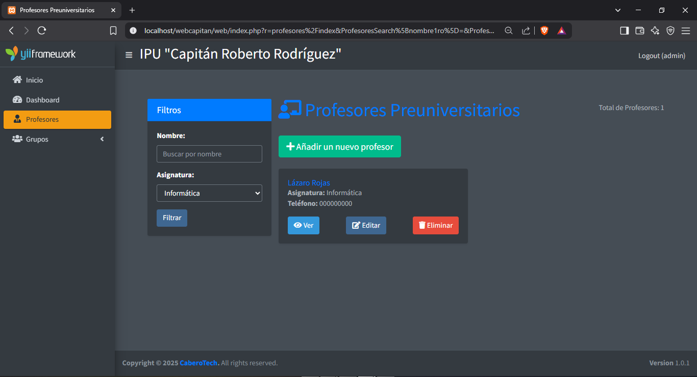

Un sistema robusto para la gestión eficiente de estudiantes y profesores.
Este sistema aborda la necesidad de gestionar la información de estudiantes y profesores de manera eficiente y segura. Proporciona funcionalidades avanzadas como:
Lenguaje principal del sistema, ideal para desarrollo web del lado del servidor.
Ventajas: Flexibilidad, integración con bases de datos y soporte amplio.
Utilizado para la automatización de tareas y scripts del sistema.
Ventajas: Eficiencia en la ejecución de comandos y scripts.
Framework de diseño utilizado para crear una interfaz elegante y profesional.
Ventajas: Diseño responsivo, componentes predefinidos y personalización sencilla.